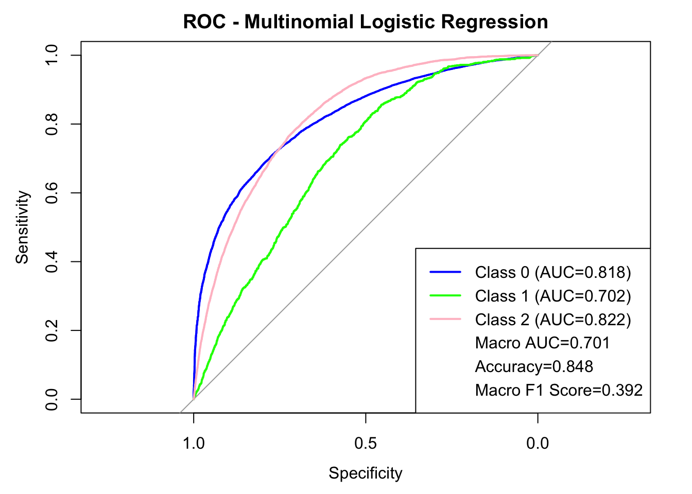
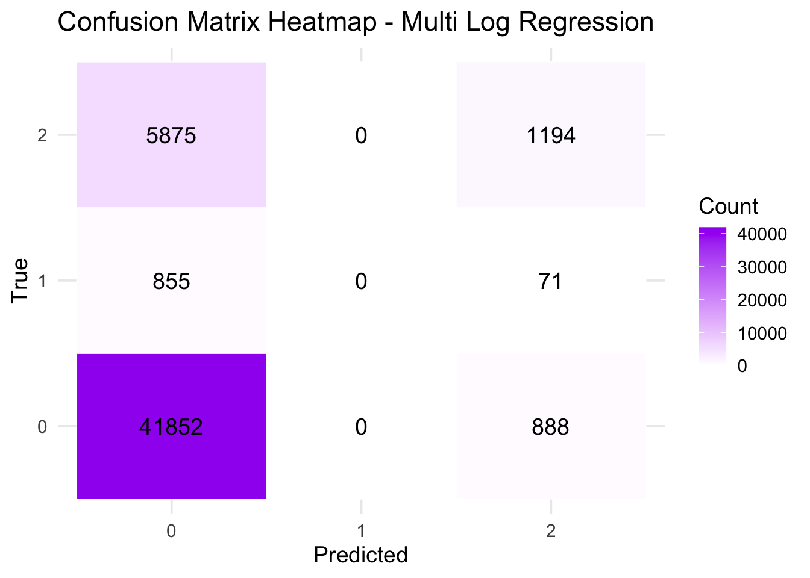

set.seed(1)
diabetes_original =
read_csv("Diabete datasets/diabetes_012_health_indicators_BRFSS2015.csv") |>
janitor::clean_names() ## Rows: 253680 Columns: 22
## ── Column specification ───────────────────────────────────
## Delimiter: ","
## dbl (22): Diabetes_012, HighBP, HighChol, CholCheck, BMI, Smoker, Stroke, He...
##
## ℹ Use `spec()` to retrieve the full column specification for this data.
## ℹ Specify the column types or set `show_col_types = FALSE` to quiet this message.diabetes_original <- diabetes_original |>
mutate(
ment_hlth = as.numeric(ment_hlth),
phys_hlth = as.numeric(phys_hlth),
bmi = as.numeric(bmi),
across(
.cols = -c(ment_hlth, phys_hlth, bmi),
.fns = as.factor
)
)
head(diabetes_original)## # A tibble: 6 × 22
## diabetes_012 high_bp high_chol chol_check bmi smoker stroke
## <fct> <fct> <fct> <fct> <dbl> <fct> <fct>
## 1 0 1 1 1 40 1 0
## 2 0 0 0 0 25 1 0
## 3 0 1 1 1 28 0 0
## 4 0 1 0 1 27 0 0
## 5 0 1 1 1 24 0 0
## 6 0 1 1 1 25 1 0
## # ℹ 15 more variables: heart_diseaseor_attack <fct>, phys_activity <fct>,
## # fruits <fct>, veggies <fct>, hvy_alcohol_consump <fct>,
## # any_healthcare <fct>, no_docbc_cost <fct>, gen_hlth <fct>, ment_hlth <dbl>,
## # phys_hlth <dbl>, diff_walk <fct>, sex <fct>, age <fct>, education <fct>,
## # income <fct>train/test split
# using createDataPartition because diabetes_012 is unbalanced based on EDA.
train_test_split <- createDataPartition(diabetes_original$diabetes_012, p = 0.8, list = FALSE)
train <- diabetes_original[train_test_split, ]
test <- diabetes_original[-train_test_split, ]
y_test <- test$diabetes_012F1 function for multiclass
multi_f1 <- function(true, pred) {
# Convert to factors
true <- as.factor(true)
pred <- as.factor(pred)
# make sure all classes are taken into consideration (bc diabetes=1 is rare)
class <- union(levels(true), levels(pred))
true <- factor(true, levels = class)
pred <- factor(pred, levels = class)
# A vector to store F1 for each class
multi_f1_vec <- numeric(length(class))
# Loop over each class
for (j in seq_along(class)) {
i <- class[j]
tp <- sum(true == i & pred == i)
fn <- sum(true == i & pred != i)
fp <- sum(true != i & pred == i)
rec <- if((tp + fn) == 0) 0 else tp / (tp + fn)
prec <- if((tp + fp) == 0) 0 else tp / (tp + fp)
if(prec + rec == 0) {
multi_f1_vec[j] <- 0
} else {
multi_f1_vec[j] <- 2 * prec * rec / (prec + rec)
}
}
mean(multi_f1_vec)
}Model 1: multinomial logistic regression
model1 <- multinom(diabetes_012 ~ ., data = train, trace = FALSE)model1_pred <- predict(model1, newdata = test, type = "class")
model1_prob <- predict(model1, newdata = test, type = "prob")
model1_accuracy <- mean(model1_pred == y_test)
cat("Accuracy is:", model1_accuracy, "\n")## Accuracy is: 0.8484478model1_macro_f1 <- multi_f1(y_test, model1_pred)
cat("Macro F1 score is:", model1_macro_f1, "\n")## Macro F1 score is: 0.3918423model1__macro_auc <- as.numeric(multiclass.roc(response = y_test, predictor = model1_prob)$auc)
cat("Macro AUC is:", model1__macro_auc, "\n")## Macro AUC is: 0.700909ROC
cols <- c("blue", "green", "pink")
# Compute one-vs-rest ROC and AUC for each class
model1_roc1 <- roc(as.numeric(y_test == levels(y_test)[1]), model1_prob[, levels(y_test)[1]])## Setting levels: control = 0, case = 1## Setting direction: controls < casesmodel1_roc2 <- roc(as.numeric(y_test == levels(y_test)[2]), model1_prob[, levels(y_test)[2]])## Setting levels: control = 0, case = 1
## Setting direction: controls < casesmodel1_roc3 <- roc(as.numeric(y_test == levels(y_test)[3]), model1_prob[, levels(y_test)[3]])## Setting levels: control = 0, case = 1
## Setting direction: controls < cases# Plot ROC
plot(model1_roc1, col = cols[1], main = "ROC - Multinomial Logistic Regression")
lines(model1_roc2, col = cols[2])
lines(model1_roc3, col = cols[3])
# Compute class AUCs
model1_class_aucs <- sapply(levels(y_test), function(cl) round(auc(roc(as.numeric(y_test == cl), model1_prob[, cl])), 3))## Setting levels: control = 0, case = 1
## Setting direction: controls < cases## Setting levels: control = 0, case = 1## Setting direction: controls < cases## Setting levels: control = 0, case = 1## Setting direction: controls < cases# Add legend with class AUCs + macro AUC
legend("bottomright",
legend = c(paste0("Class ", levels(y_test), " (AUC=", model1_class_aucs, ")"),
paste0("Macro AUC=", round(model1__macro_auc, 3)),
paste0("Accuracy=", round(model1_accuracy, 3)),
paste0("Macro F1 Score=", round(model1_macro_f1, 3))),
col = c(cols, rep(NA, 3)),
lwd = c(rep(2, 3), rep(NA, 3)))
Confusion matrix heatmap
model1_cm <- table(True = y_test, Pred = model1_pred)
model1_cm_df <- as.data.frame(model1_cm) |>
rename(True = True, Predicted = Pred, Count = Freq)
ggplot(model1_cm_df, aes(x = Predicted, y = True, fill = Count)) +
geom_tile(color = "white") +
geom_text(aes(label = Count), color = "black", size = 5) +
scale_fill_gradient(low = "white", high = "purple") +
labs(title = "Confusion Matrix Heatmap - Multi Log Regression", x = "Predicted", y = "True") +
theme_minimal(base_size = 14)